Real headless Chromium screenshots of the staging dashboard (v0.17.9). The temporary staging parent was deleted after capture. The category was turned on for the staging test child; the explanation is open in the desktop captures. The popup and child-tip captures use the same staging family.
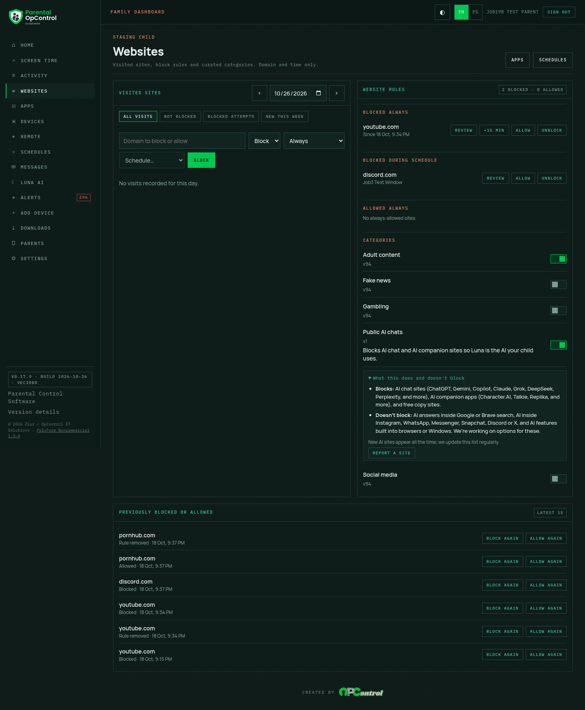
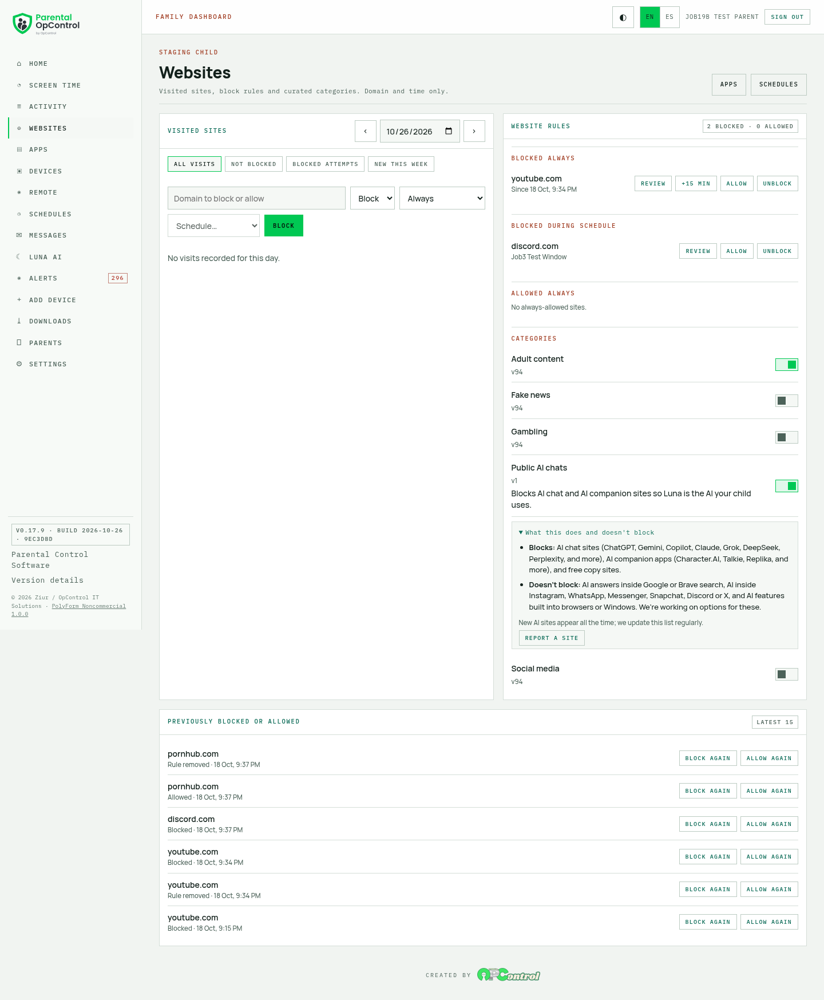
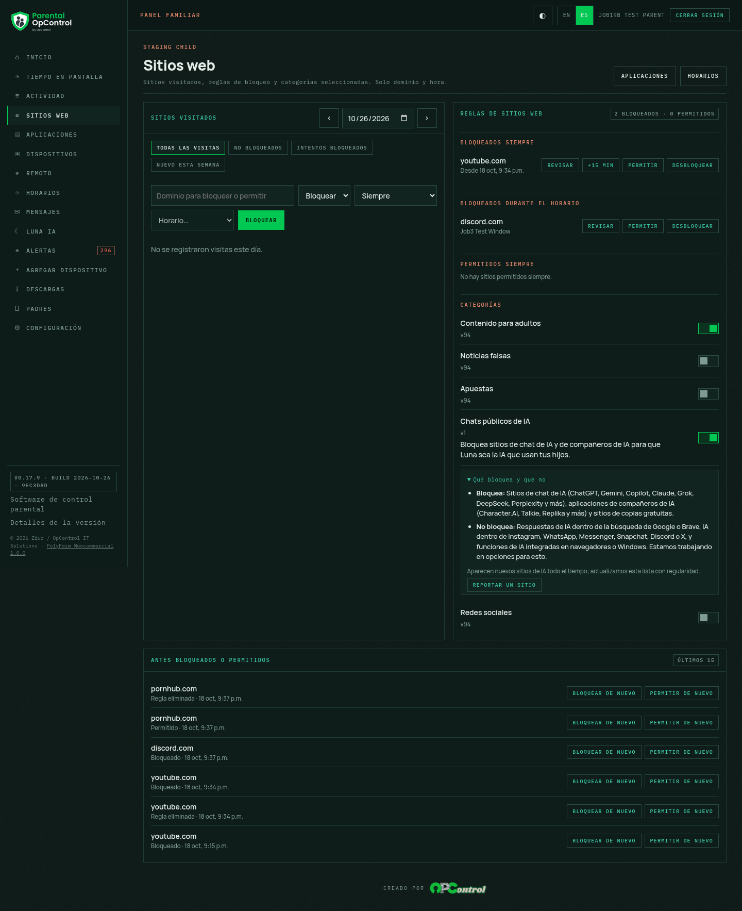
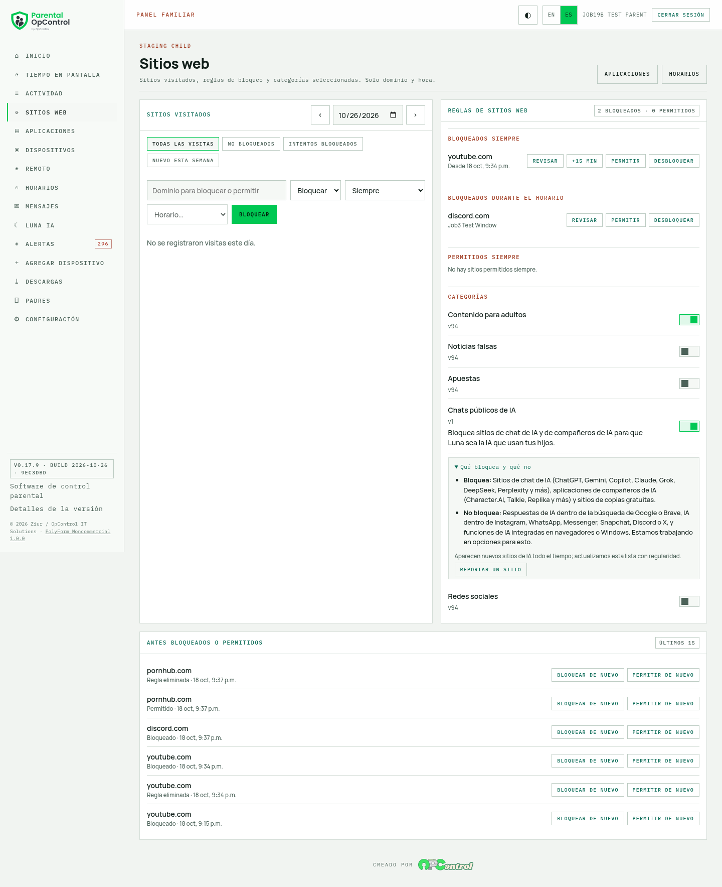
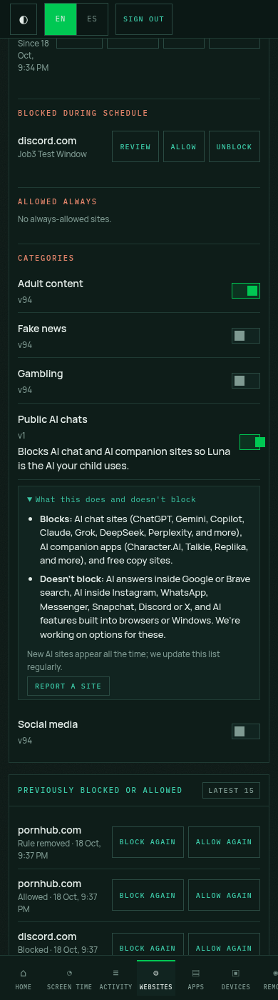
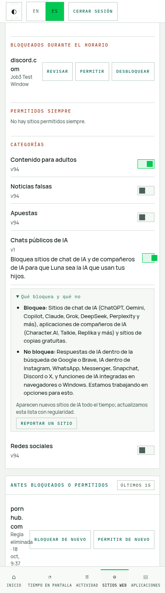
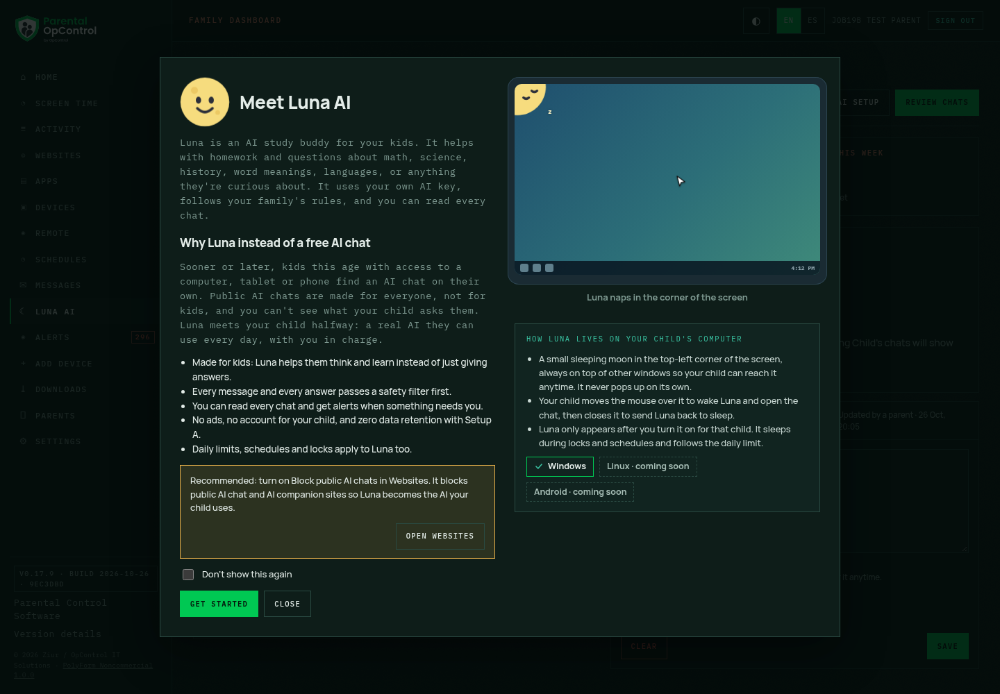
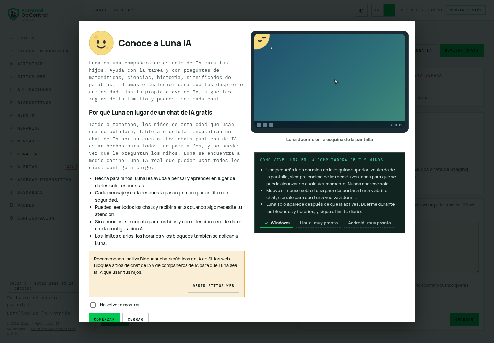
The button points to /websites#category-ai. Captures popup-en-dark-opened.png and
popup-es-light-opened.png show the destination after the click.
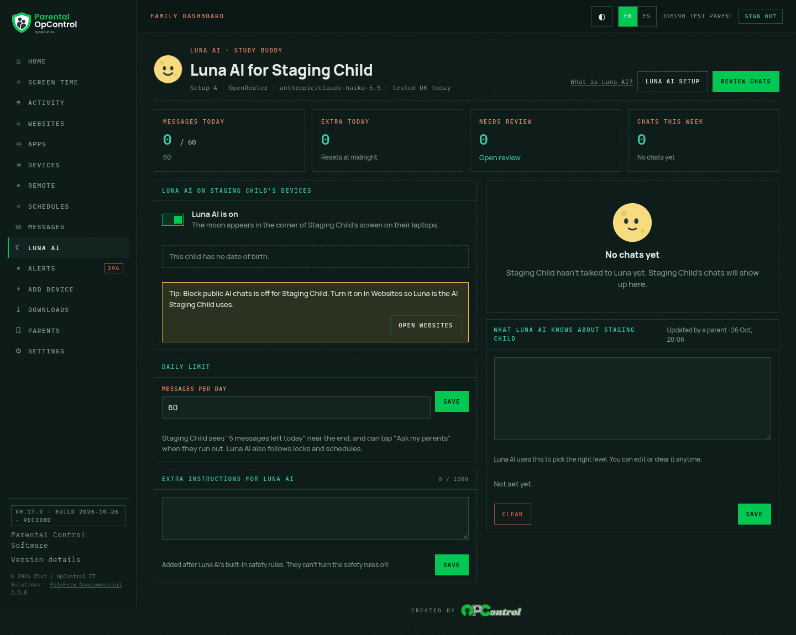
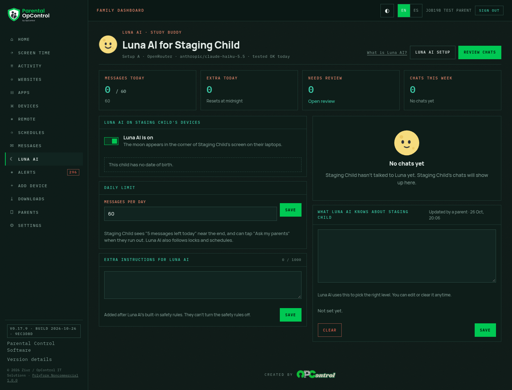
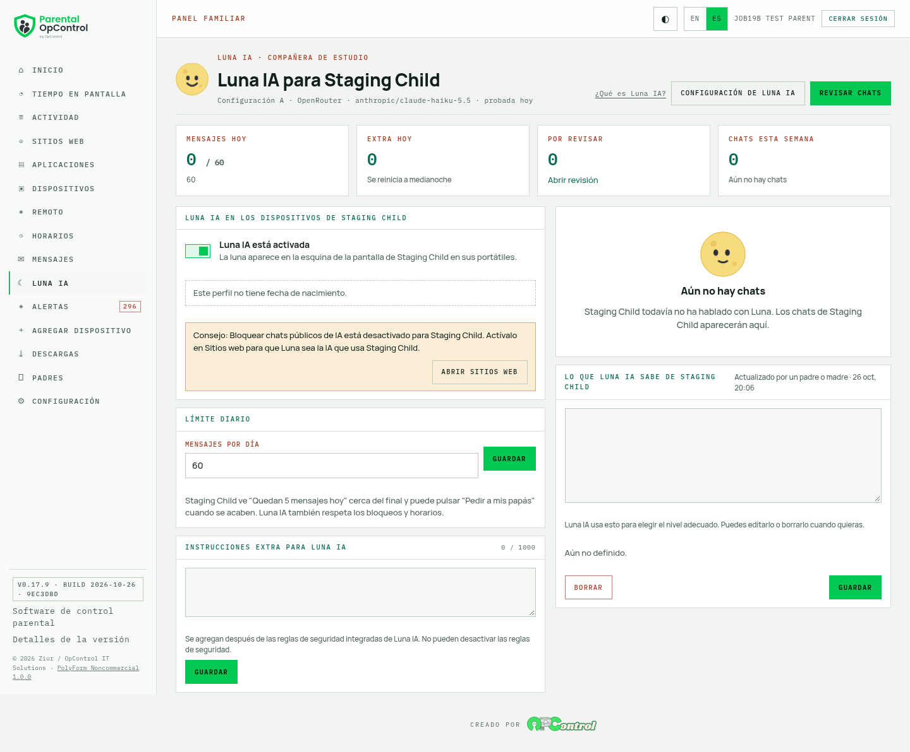
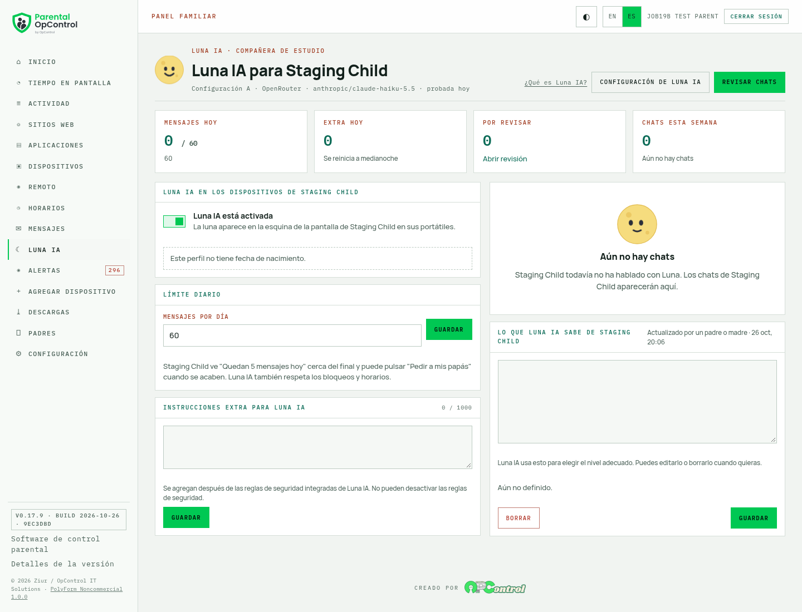
Limit: desktop screenshots are 1440 px; phone captures are 390 px viewport, not a physical phone. The staging Luna settings were temporarily made test-ready only to exercise the tip, then restored; the temporary parent was deleted. The screenshots contain the temporary parent name, but that account no longer exists.